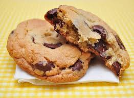

Recette de cookies
Recette pour 6 personnes !

Ingrédients:
- 1 oeuf
- 85g de sucre
- 85g de beure
- 150g de farine
- 100g de pépites de chocolat
- 1 sachet de sucre vanillé
- 1 cuillière à café de levure chimique
- 1/2 cuillière à café de sel
Préparation:
- Laissez ramollir le beurre à température ambiante. Dans un saladier, malaxez-le avec le sucre.
- Ajoutez l'oeuf et éventuellement le sucre vanillé.
- Versez progressivement la farine, la levure chimique, le sel et les pépites de chocolat. Mélangez bien
- Beurrez une plaque allant au four ou recouvrez-la d'une plaque de silicone. A l'aide de deux cuillière à soupe ou simplement avec les mains formez des noids de pâte en les espaçant car elles s'étallerons à la cuisson.
- Faites cuire 8 à 10 minutes à 180°C soit thermostat. Il faut les sortir dès que les contours commencent à brunir